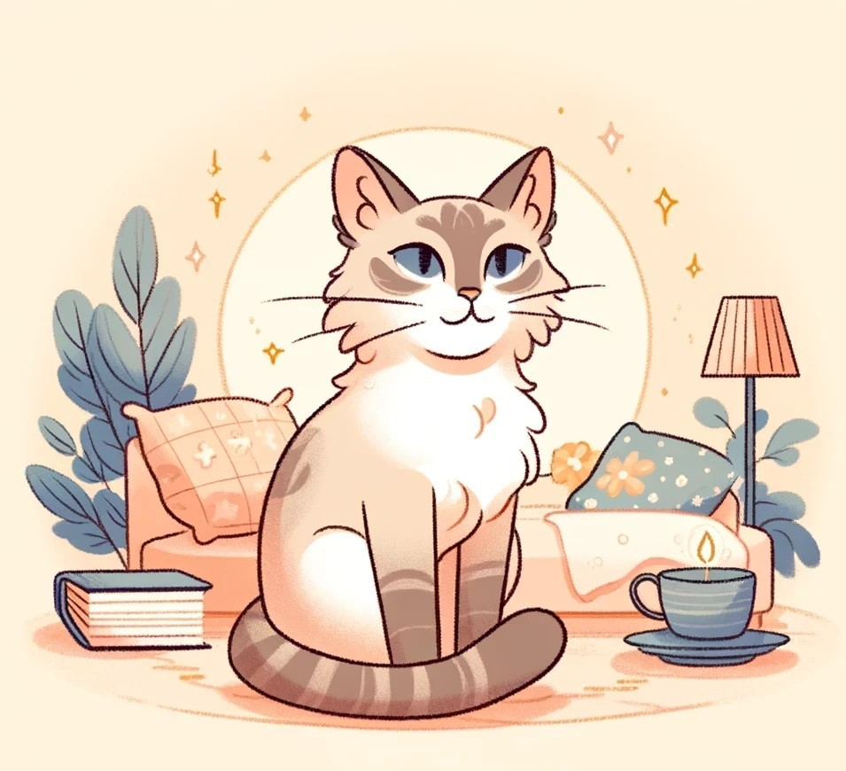

올빼미
고독한 전략가
올빼미는 독립적이고 전략적인 사고지며 주로 조용한 환경에서 높은 집중력과 관찰력을 발휘합니다.
이들은 빠르고 은밀하게 문제를 해결하며, 강력한 독립심을 가지고 있습니다.
복잡한 문제를 해결하기 위해 치밀한 계획을 세우고, 목표를 달성하기 위해 용하고 신중한 접근을 선호합니다.
밤에 활동하며 사냥하는 올빼미와 같이 혼자서 깊이 있는 사고를 통해 문제를 해결하고, 독립적으로 일을 처리하는 경향이 있습니다.
장점
• 분석적이고 계획적인 성격 : 올빼미는 복잡한 문제를 해결하는 데 탁월한 능력을 보입니다. 이들은 철저한 분석과 계획을 통해 문제를 체계적으로 접근하고 해결합니다.
• 높은 집중력 : 올빼미는 높은 집중력을 통해 주변 환경과 상황을 정확하게 파악할 수 있습니다. 이들은 중요한 세부 사항을 놓치지 않고, 목표 달성을 위해 집중력을 유지합니다.
• 독립적 사고 : 올빼미는 독립적으로 사고하고 행동할 수 있으며, 자신만의 방법으로 목표를 달성합니다. 이들은 다른 사람의 의견에 쉽게 흔들리지 않고, 자신의 신념과 계획에 따라 행동합니다.
단점
• 사회적 상호작용 부족 : 올빼미는 사회적 상호작용이 부족할 수 있으며, 너무 고독을 추구하는 경향이 있어 다른 사람들과의 관계 형성이 어려울 수 있습니다.
• 감정 표현의 어려움 : 올빼미는 감정 표현이 서툴러서 타인과의 감정적 교류에 어려움을 겪을 수 있습니다.
• 궁합이 좋은 동물은?

고양이
고양이와 올빼미는 둘 다 독립적인 성향이 강하고, 조용하며개인적인 공간을 존중받기를 원하는 특성을 공유합니다.
각자의 영역에서 활동하면서도 서로 간섭하지 않는 방식으로 공존할 수 있습니다.
표범은 실용적인 기술과 빠른 반응 속도로 이를 보완할 수 있습니다.
이 둘은 서로의 방식과 영역을 효과적으로 협력 할 수 있습니다.
• 궁합이 안맞는 동물은?

돌고래
돌고래는 극히 사회적인 동물로서, 복잡한 사회적 구조와 지속적인 상호작용을 통해 그들의 사회를 유지합니다. 이는 올빼미의 독립적이고 조용한 성향과 상반됩니다.
돌고래는 지속적인 소통과 집단 내 상호작용을 필요로 하는 반면, 올빼미는 혼자 있는 시간을 선호합니다. 이런 차이는 두 유형 간에 상호 이해 및 편안한 공존을 어렵게 만들 수 있습니다.
돌고래의 지속적인 에너지와 소통 요구는 올빼미에게 과도한 스트레스
를 줄 수 있습니다.